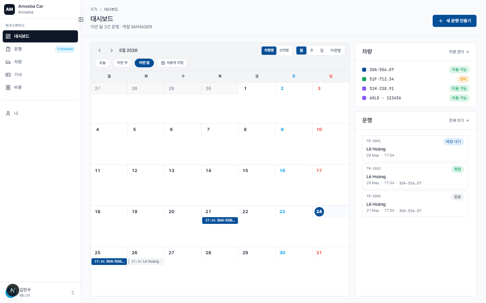
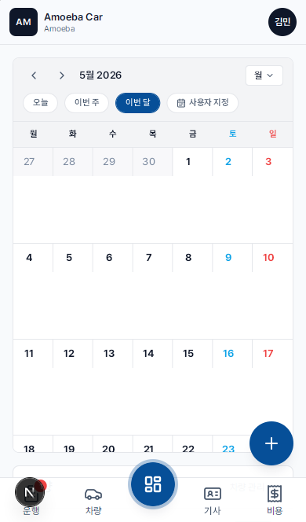

매니저 대시보드 — 차량팀 현황
- URL
/dashboard— 매니저 역할로 로그인 시 자동으로 이동되는 홈 화면- 데이터 범위
- 내 운행만 표시 (내가 생성하거나 승객으로 등록된 운행)


3가지 주요 영역
1. 운행 캘린더
해당 월의 내 운행을 모두 표시합니다 (내가 생성하거나 승객으로 등록된 운행). 상단 탭에서 3가지 보기 모드를 선택할 수 있습니다:
- 차량별 — 번호판 기준으로 운행을 묶어서 표시
- 상태별 — PENDING / CONFIRMED / IN_PROGRESS / COMPLETED 기준으로 운행을 묶어서 표시
- 4가지 보기 모드: 월 / 주 / 일 / 차량별
캘린더에서 운행 항목을 클릭하면 상세 정보를 확인할 수 있습니다.
2. 차량 목록 (우측 상단 패널)
차량팀의 차량 목록과 현재 상태 (사용 가능 / 운행 중 / 정비 중 / 처분됨)를 표시합니다. 차량 이름을 클릭하면 상세 정보를 확인할 수 있습니다 (조직 소유 차량, 읽기 전용).
3. 관련 운행 (우측 하단 패널)
출발 시각 기준으로 최근 운행 목록과 상태를 표시합니다. "전체 보기"를 클릭하면 /trips 페이지로 이동합니다.
'새 운행 만들기' 버튼
대시보드 우측 상단의 파란색 큰 버튼을 클릭하면 차량 신청 폼이 열립니다 (다음 페이지 차량 신청 참조).
관리자와의 차이점
- 데이터 범위가 좁음 — 관리자는 회사 전체 운행을 볼 수 있지만, 매니저는 내 운행만 표시됩니다
- 사이드바가 짧음 — "관리" 그룹 없음 (사용자 / 설정 / 감사 로그)
- 헤더의 운행 수 — "이번 달 운행 X건 · 역할 MANAGER"로 표시됩니다